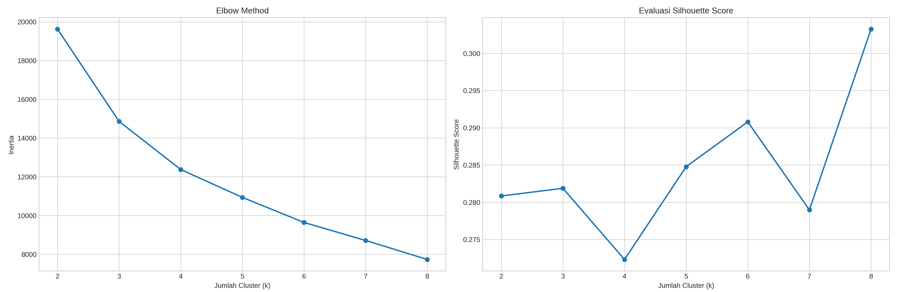
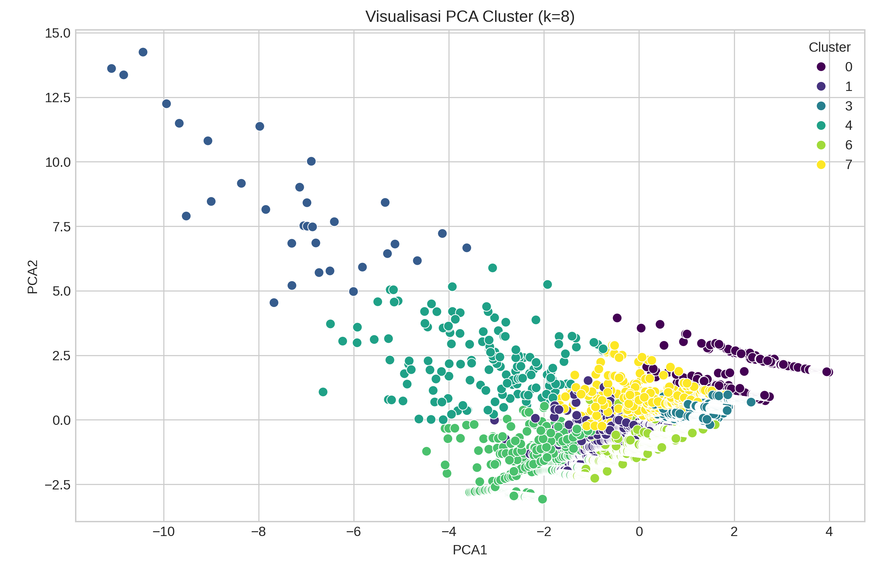

Analisis clustering dilakukan menggunakan metode K-Means untuk mengelompokkan data berdasarkan kemiripan pola.
Variabel yang digunakan meliputi: tahun, kode provinsi, jumlah vaksinasi, jumlah kematian, dan rasio vaksinasi terhadap kematian.
Penentuan jumlah cluster dilakukan menggunakan Elbow Method dan Silhouette Score.
Hasil evaluasi menunjukkan jumlah cluster optimal berada pada: k = 8 dengan silhouette score sekitar 0.303.
Cluster optimal.
Kualitas cluster sedang.
Pola cluster masih valid.

Dataset berhasil dibagi menjadi 8 cluster berdasarkan karakteristik data yang berbeda.
Visualisasi PCA menunjukkan beberapa cluster memiliki pemisahan cukup jelas, namun masih terdapat overlap antar kelompok.
Hal ini menunjukkan bahwa struktur data cukup kompleks dan hubungan antar variabel tidak sepenuhnya linear.

File model hasil klasifikasi dapat diunduh melalui tombol berikut.
Metode K-Means berhasil membentuk pola pengelompokan data berdasarkan kombinasi variabel vaksinasi dan kematian.
Walaupun masih terdapat overlap antar cluster, hasil clustering tetap mampu memberikan gambaran pola distribusi data secara umum.